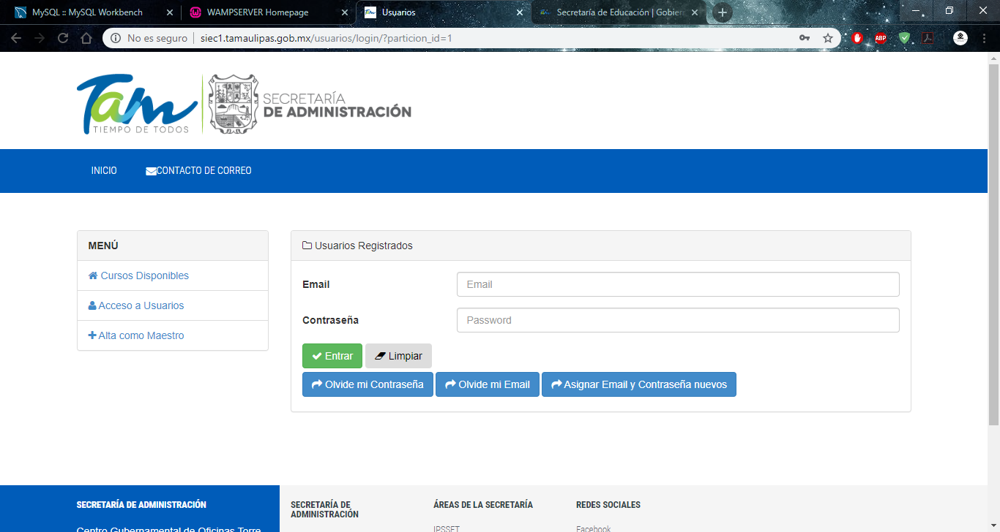

Introducción
Dentro de este proyecto se busca reconstruir y reparar la plataforma de gestión de cursos CAPASITI, esto se elaboró de forma de prueba y error, dado que la mayoría de las pestañas de la página se encontraban con algún fallo, se realizaron múltiples pruebas en donde estos se iban descubriendo y resolviendo sobre la marcha de cada pestaña.
Marco Teórico
Cake PHP
CakePHP es un framework de desarrollo de aplicaciones web escrito en PHP, creado sobre los conceptos de Ruby on Rails.
Protocolo FTP
FTP son las siglas de “File Transfer Protocol” o en español “Protocolo de transferencia de archivos”, que es un protocolo para la transferencia de archivos entre sistemas conectados a una red.
Justificación
Este proyecto se elabora por la necesidad del gobierno de poder implementar un gestor de cursos para que los participantes puedan tener un acceso sencillo a estos, que los puedan realizar. y así mismo que su información de ¿Quiénes?, ¿Desde dónde?, ¿Cuántos?, toman estos cursos, dado que se busca que estos datos puedan presentarse en reportes semestrales de la subsecretaria.
Objetivos
Principalmente la resolución de los problemas que presentaba la página, dado que la página en si fue proporcionada en convenio con la subsecretaria de educación, esta contaba con detalles que daban alusión a su sitio web, también se encontraban errores que obstruían el funcionamiento en general de la página, como datos basura, conexiones fuera de lugar, problemas en el layout, acciones erróneas y generación errónea de documentos.
Desarrollo
Se desarrollo bien machin pero ahorita no da tiempo de acomodar todo la verdad jaja xd
Conclusión
Principalmente los resultados que se obtuvieron caen en la correcta funcionalidad de la página web, generando todo lo que se necesita, así mismo concretamente el equipo no esta satisfecho con el resultado obtenido dado que a medida que se trabajaba solamente se obtenían mas y mas errores, que si bien estos estaban desde tiempo antes no quita que posiblemente alguno se allá obtenido con las modificaciones que se hicieron, además de la ambigüedad de la página, se proporcionó una segunda oportunidad de ir para poder actualizar la página a una versión más actual de CakePHP.